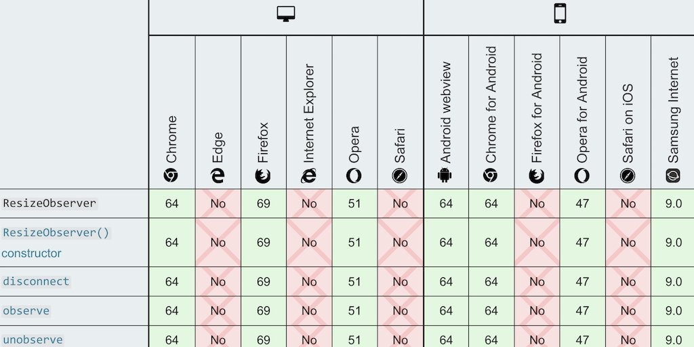

The @w3c Media #WorkingGroup published 3 first public working drafts to expand media support on the Web: Media Capabilities, Picture-in-Picture, and Media Session Standard.
https://twitter.com/w3c/status/1223170855771025409
1) The Media Capabilities spec. answers questions such as: "Can the user agent render High-Dynamic Range (#HDR) content?", allowing to choose the media content sent to the user accordingly: https://www.w3.org/TR/media-capabilities/
https://twitter.com/w3cdevs/status/1224375186394357762... note it answers "Can" questions, not "Should" questions, addressed by other specs. For instance, CSS Media Queries helps answer the question "Should I rather send content that uses the p3 or sRGB gamut?" when the user agent supports both
https://drafts.csswg.org/mediaqueries-4/#color-gamut
https://twitter.com/w3cdevs/status/12243751957057167362) The Picture-in-Picture (PiP) mode is becoming increasingly popular to watch videos while continuing to interact with other content sites or applications. The Picture-in-Picture specification creates an #API surface for it: https://www.w3.org/TR/picture-in-picture/
https://twitter.com/w3cdevs/status/1224375203574226944... the Media Capabilities spec's editors are @mounirlamouri, Chris Cunningham and @vi_dot_cpp
The work happens in https://github.com/w3c/media-capabilities/issues/
https://twitter.com/w3cdevs/status/1224375199812014080... the Picture-in-Picture spec's editors are @mounirlamouri and François Beaufort. Issue tracking is happening here: https://github.com/w3c/picture-in-picture/issues/
https://twitter.com/w3cdevs/status/12243752066234818593) In the native world, a music #app shares info about what's playing (title, artist, album...), and provide media controls (play/pause, back/forward...). The Media Session #API allows web apps to integrate with the system as well: https://www.w3.org/TR/mediasession/
https://twitter.com/w3cdevs/status/1224375208406081536... More explanations about the MediaSession #API are in https://github.com/w3c/mediasession/blob/master/explainer.md. The spec's editors are @mounirlamouri
and Rebecca Sterling Hughes
https://twitter.com/w3cdevs/status/1224375868035948550üóìÔ∏è February@w3c: f2fmeetings, conferences, etc. https://www.w3.org/participate/eventscal.html

5-6 Feb.: The @ImmersiveWebW3C #WorkingGroup meets f2f in #Seattle üá∫üá∏ https://www.w3.org/immersive-web/
https://twitter.com/w3cdevs/status/122438461554622464211-13 Feb.: @ConnectorKaren speaks at the Australian Accessibility Conference in #Perth üá¶üá∫ #Accessibility #OZeWAI #PWAC
http://ozewai.org/conference/
https://twitter.com/w3cdevs/status/122438462236200960410-14 Feb.: @JalanbirdW3C and @ibjacobs attend the Merchant Advisory Group (MAG) conference in #Atlanta üá∫üá∏ #payments
https://10times.com/mag-mid-year-conference
https://twitter.com/w3cdevs/status/122438462055433420921 Feb.: This is the deadline to register for the Web&Machine Learning #W3CWorkshop where the roadmap for bringing Machine Learning capabilities to Web browsers will be discussed (#Berlin, üá©üá™, March 24-25) #AI
https://www.w3.org/2020/01/machine-learning-workshop/
https://twitter.com/w3cdevs/status/122438462407748403226 Feb.: The @w3c #WebAuthn #WorkingGroup meets in #SanFrancisco üá∫üá∏, hosted by @Cisco. Find the meeting agenda at https://www.w3.org/Webauthn/
https://twitter.com/w3cdevs/status/1224384628879958017The @w3c Web & Machine Learning workshop, scheduled for March 24 & 25 in #Berlin üá©üá™, aims to collaboratively build a roadmap for enrich the #WebPlatform with the right foundations for #MachineLearning
https://www.w3.org/2020/01/machine-learning-workshop/
Chaired by @anssik and @KellyJayDavis, this new #W3CWorkshop, hosted by @Microsoft, will help review existing work in this space, how it fits together and how well it fits the need of end-users and industry
https://twitter.com/w3cdevs/status/1224740848144920576Among notable existing work in this space, the #MachineLearning for the Web #CommunityGroup is evaluating what primitives Web browsers should provide as #APIs to make Machine Learning inference fast, enabling one-click deployment of ML-based #apps
https://www.w3.org/community/webmachinelearning/
https://twitter.com/w3cdevs/status/1224740924099563521The expectation is that such an API would help with JS-based frameworks already being used today to run #MachineLearning inference in browsers: #TensorFlowJS (@nsthorat is on the workshop committee), the #javascript
version of #ONNX, PaddlePaddle
https://twitter.com/nsthorat/status/1222162958307987456
https://twitter.com/w3cdevs/status/1224741004529618945The main deliverable the group is discussing at the moment is the Web Neural Network API (WebNN) https://webmachinelearning.github.io/webnn/
https://twitter.com/w3cdevs/status/1224741002621177857Integration with cloud-based inferencing, prospects of in-browser training, intersections with #privacy, #security and #a11y - there is no shortage of topics that could use the building of a shared understanding!
https://twitter.com/w3cdevs/status/1224741009357266945The workshop will also discuss how other related technologies fit in that landscape: other computing APIs such as #WebGPU, #WebAssembly, but also ML-based #APIs such as the speech recognition API https://wicg.github.io/speech-api/ or the shape
detection API https://wicg.github.io/shape-detection-api/
https://twitter.com/w3cdevs/status/1224741006672846849If you think you have a useful perspective to contribute, please consider registering to the Web & #MachineLearning #W3CWorkshop before Feb 21 https://www.w3.org/2020/01/machine-learning-workshop/
https://twitter.com/w3cdevs/status/1224741014046494722Have you tried adopting #WebAuthn as a #developer but got stuck? There is an ongoing study from @Saar_Uni on barriers to #WebAuthn adoption who needs to hear from you #webdevs! https://userstudies.cispa.saarland/limesurvey/index.php/989182?lang=en
#WebAuthn has been developed to help solve the problem with passwords on the Web - but it only does so where and when its gets adopted. Make your voice heard to help make passwords become a problem of the past!
https://twitter.com/w3c/status/1102555604151947265
https://twitter.com/w3cdevs/status/1225094579680174081See also their related poster on the topic https://dl.acm.org/doi/10.1145/3319535.3363283
https://twitter.com/w3cdevs/status/1225094584251953157Congrats to editors @SergeyKanzhelev, Morgan McLean, @AloisReitbauer, @bogdandrutu, @nikmd23 and @YuriShkuro for the newly published @w3c #WebStandard "Trace Context" #timetoadopt https://twitter.com/w3c/status/1225421980448501760
https://twitter.com/w3cdevs/status/1225772744941490176Happy meeting! https://twitter.com/robertnyman/status/1227267987679404032
https://twitter.com/w3cdevs/status/1227510698869239809The @csswg released the first @w3c public #WorkingDraft of 'Resize Observer': https://www.w3.org/TR/2020/WD-resize-observer-1-20200211/
https://twitter.com/w3c/status/1227159924880400384
It's available in #Chrome and #Firefox - see @MDN's browser compat. table: https://developer.mozilla.org/en-US/docs/Web/API/ResizeObserver#Browser_compatibility
https://twitter.com/w3cdevs/status/1229350117687332864ResizeObserver opens up the way to (part of) container queries, a long-wanted ask from #developers; @briankardell gives a great overview of container queries status and future https://twitter.com/briankardell/status/1227609391924490240
https://twitter.com/w3cdevs/status/1229350137757081601It landed in @webkit and #Safari Technology Preview (TP) a couple of weeks ago - https://twitter.com/webkit/status/1221853204477964291
https://twitter.com/w3cdevs/status/1229350135165046785If you have comments and feedback, head to the @csswg's repo: https://github.com/w3c/csswg-drafts
https://twitter.com/w3cdevs/status/1229350139610959873It summarizes the discussions around making visual, auditory and haptic interactions accessible to people with #disabilities, as well as adapting #AssistiveTech to the new challenges from #XR
The report from the Inclusive Design for Immersive Web Standards #W3CWorkshop was published last week #w3cInclusiveXR #VR #AR #ImmersiveWeb
https://www.w3.org/2019/08/inclusive-xr-workshop/report.html
https://twitter.com/w3cdevs/status/1229747430696026113The @wai APA #WorkingGroup very timely released their first draft of the #XR #Accessibility User Requirements spec. which details how immersive experiences need to be adapted to make them accessible: https://www.w3.org/TR/2020/WD-xaur-20200213/
https://twitter.com/w3c/status/1227862777907359744
https://twitter.com/w3cdevs/status/1229747433019727873Because making #XR accessible (on the Web and elsewhere) requires many technologies to work well together, a new @w3c #CommunityGroup has been created to help coordinate and track progress - join if you're interested in helping!
https://www.w3.org/community/idiw/
https://twitter.com/w3cdevs/status/1229747436559720455This survey serves as a complement to the survey MDN ran last summer and will help derive more specific follow-up actions - please chime in! https://twitter.com/robertnyman/status/1232252516689154053
https://twitter.com/w3cdevs/status/1232291539050729473